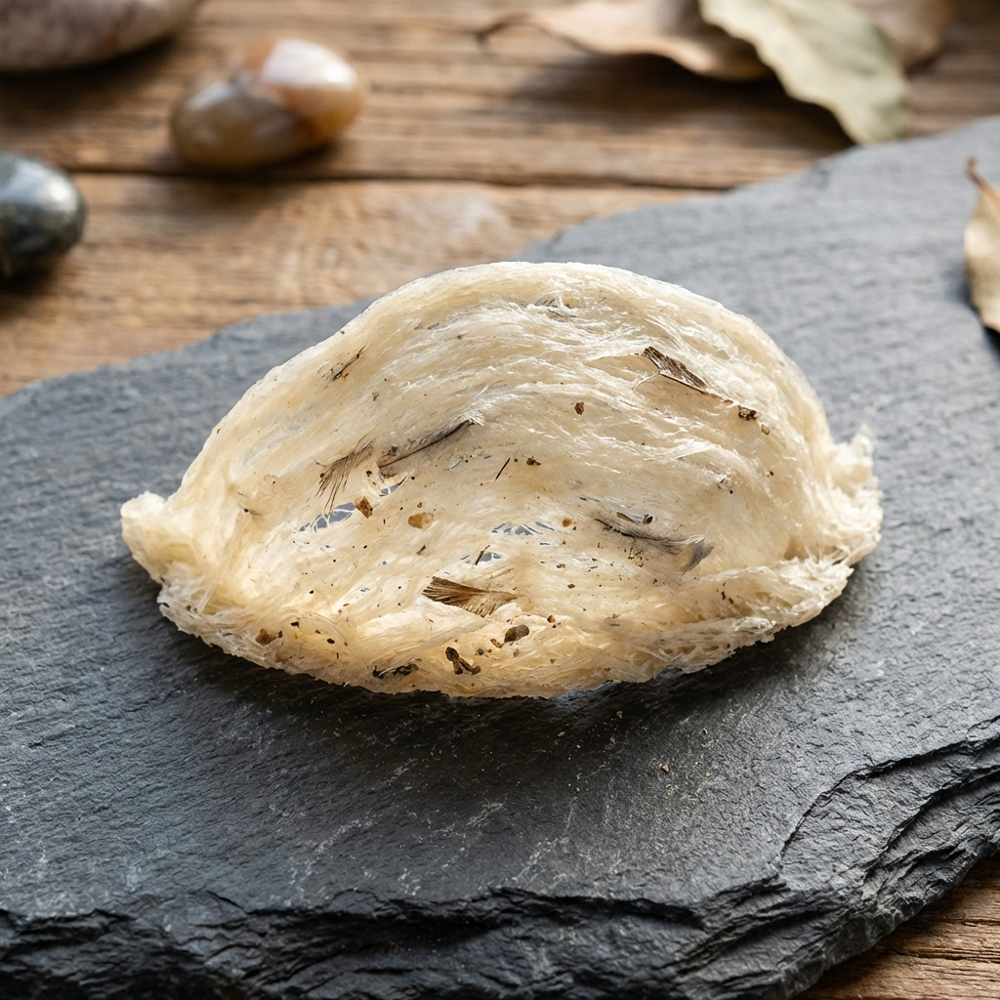

Trang chủ / Blog / Cách chọn yến thô
Cách chọn yến thô: tổ già, ít lông, bụng sạch

Bài này viết lại từ bài đăng trên Fanpage Yến Sào Nhà Ry ngày 21/11/2026 — bài đăng có lượt xem cao nhất trong 28 ngày qua của Page. Yến thô nhà Ry là loại thô già, ít lông, bụng sạch, 50g khoảng 6 tổ. Mua 50g yến thô được tặng táo đỏ, đường phèn và nhíp nhặt lông. Dưới đây là cách nhận biết yến thô ngon và cách làm sạch trước khi chưng.
Yến thô già là yến như thế nào?
Yến thô già là tổ yến được thu hoạch khi chim yến đã làm tổ đủ lâu, sợi yến dày, dài và dai. Nhìn bằng mắt thường, tổ yến già có màu trắng ngà hoặc vàng nhạt tự nhiên, sợi rõ, cầm chắc tay, bẻ nhẹ nghe tiếng giòn. Yến non thì sợi mỏng, tổ nhỏ, dễ vụn khi làm sạch. Khi chọn yến thô, hãy ưu tiên tổ già: sợi dài, dai, ngâm nở đều và chưng lên không bị tan.
3 dấu hiệu chọn yến thô ngon
1. Ít lông, lông vừa phải
Tổ yến thô nào cũng có lông, vì đó là tổ thật của chim yến. Điều cần xem là lượng lông: yến thô già, lông vừa thì làm sạch nhanh, không mất nhiều thời gian nhặt. Yến nhiều lông, lông tơ bám dày thì làm sạch lâu hơn, hao yến hơn. Khi mua, bạn cứ hỏi thẳng shop: tổ này lông nhiều hay lông vừa, bụng có sạch không.
2. Bụng tổ sạch
Bụng tổ là phần bên trong tổ yến, nơi thường bám nhiều tạp chất nhất. Yến thô nhà Ry khi xếp hộp đều chọn loại bụng sạch, tức phần bụng đã được làm sơ, ít cặn, ít lông tơ bám. Bụng sạch thì khi ngâm và nhặt lông sẽ nhanh hơn, yến sau khi làm sạch cũng nở đều hơn.
3. Tổ to, đều, 50g khoảng 6 tổ
Với loại yến thô già đang bán, 50g khoảng 6 tổ, tức mỗi tổ nặng khoảng 8g. Số tổ trong 50g hay 100gr thay đổi theo độ to nhỏ của từng tổ, nên đây chỉ là con số tham khảo, không phải cam kết cố định cho mọi đợt hàng. Tổ to, đều nhau thì khi chưng, sợi yến nở đều và đẹp hơn.
Cách làm sạch yến thô trước khi chưng
Yến thô chưa làm sạch nên cần làm sạch trước khi chưng. Các bước cơ bản: ngâm tổ yến trong nước sạch cho nở mềm, dùng nhíp gắp lông và tạp chất, rửa lại nhẹ nhàng bằng nước sạch rồi mới đem chưng. Yến thô già, lông vừa, bụng sạch thì bước này cũng dễ làm lắm — người mới làm lần đầu cứ nhắn shop để được hướng dẫn. Đọc thêm hướng dẫn chi tiết trong bài cách chưng yến đúng cách.
Yến thô giá bao nhiêu?
Yến thô nhà Ry giá từ 2.000.000đ/100gr, giá ghi rõ theo 100gr cho dễ so sánh. Mua 50g yến thô được tặng táo đỏ, đường phèn và nhíp nhặt lông. Xem bảng giá đầy đủ của cả 3 loại trong bài giá yến sào 2026. Nếu bạn chưa biết nên mua yến thô hay yến tinh chế, đọc thêm bài yến thô hay yến tinh chế: nên mua loại nào.
Câu hỏi thường gặp
50g yến thô được khoảng mấy tổ?
Loại thô già đang bán: 50g khoảng 6 tổ. Số tổ thay đổi theo độ to nhỏ của từng tổ.
Yến thô già ít lông có dễ làm không?
Có, dễ hơn yến non nhiều lông nhiều. Ngâm nở, nhặt lông bằng nhíp, rửa lại bằng nước sạch rồi chưng.
Yến thô giá bao nhiêu?
Từ 2.000.000đ/100gr. Xem bảng giá đầy đủ trong bài giá yến sào 2026.
Cần tư vấn? Nhắn Zalo 0986.39.22.00
Nhắn Zalo để được tư vấn cách chọn yến thô và kiểm hàng khi nhận.
Nhắn Zalo ngayĐịa chỉ: E20 đường 672, Phường Phước Long, TP Hồ Chí Minh
Hotline/Zalo: 0986.39.22.00 — Facebook: Yến Sào Nhà Ry